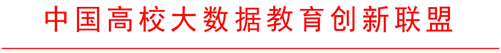
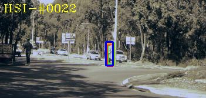
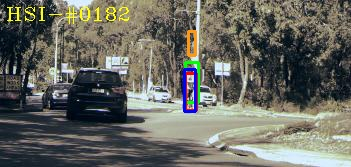
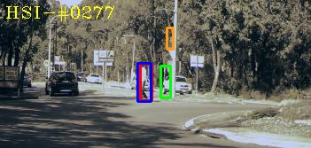
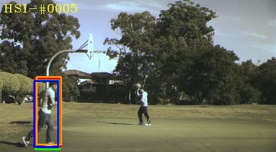
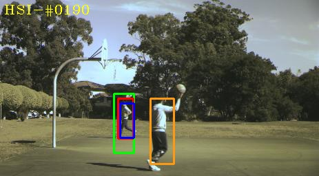
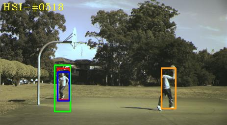
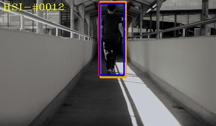
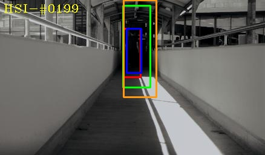
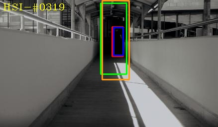

各有关单位：
为推广高光谱视频跟踪的研究，培养学生学习能力的应用和创新能力，增加校企交流合作和信息共享，提升教学质量和企业的竞争能力，第一届高光谱视频跟踪挑战赛（以下简称挑战赛）将于2019年3月举行。举办挑战赛的目的在于以赛促学，激励研究者对高光谱视频跟踪的积极性，提高学生分析、解决实际问题的综合能力。现将有关事项通知如下：
一、组织单位
本次挑战赛由中国产学研合作促进会指导，中国高校大数据教育创新联盟及泰迪杯数据挖掘挑战赛组织委员会主办，广东泰迪智能科技股份有限公司承办，广东省工业与应用数学学会、人民邮电出版社、深圳点宽网络科技有限公司及广州粤嵌通信科技股份有限公司协办。
二、挑战赛说明
1.挑战赛设赛题三道，参赛者任选其中一道参赛即可。
2. 在校的研究生、本科生、专科生都可以队为单位参赛，每队不超过3人（须属于同一所学校），专业不限，并将使用相同的题目。每队可设一名指导教师，从事赛前辅导和参赛的组织工作。
3.本科及以上组与专科组（3人必须都是专科生）分开评奖。
4.参赛者必须同意挑战赛组织委员会设立的竞赛规则，注册时须填写参赛队伍的真实信息，以便核对身份并颁发证书。 挑战赛组织委员会保证所收集到的参赛者个人信息资料仅用于 挑战赛有关工作，不会公开和泄露。
5.组委会提供以下方式供参赛者交流：1）2020高光谱视频跟踪挑战赛(HST)竞赛交流群（群号：2020HST交流①：391938422， 2020HST交流②：188789557， 2020HST交流③：695172495， 2020HST交流④：283840129），请挑选一个群加入，重复加入不受理。加群后请按“单位-姓名”修改群名片，如“华南师大-李建波”，有问题可咨询群内指导老师。
6. 本次挑战赛 收取 报名费200元/队。
三、高光谱数据集说明
1.数据采集：传统上，高光谱图像主要用于遥感，由卫星上的传感器采集。传感器的最新进展使近距离以视频速率采集高光谱序列成为可能。在我们的研究中，使用一个快照马赛克高光谱相机2来收集视频。该相机每秒可采集180个高光谱立方体，每个立方体包含512×256像素和16个波段，波长范围为470nm至620nm。在我们的数据收集中，我们以每秒25帧（FPS）的速度捕获视频，其中帧是指具有二维索引空间位置和三维索引光谱带的三维高光谱立方体。为了更明显地验证材料特征在目标跟踪中的优势，同时保证与基于颜色的跟踪方法的公平性，还以与高光谱视频相同的帧速率在非常近的视角下获取了RGB视频。
2. 数据预处理-光谱校准：我们的校准过程包括两个步骤：暗校准和光谱校正。 暗校准旨在消除相机传感器产生的噪音影响。 按照IMEC公司提供的手册，我们通过从捕获的图像中减去暗框来执行暗校准，其中，当镜头盖上镜头盖时，就捕获了暗框。 光谱校准的目的是抑制不想要的二阶响应的贡献，例如对泄漏到滤光片中的波长的响应。 通过在获取的反射率上应用特定于传感器的光谱校正矩阵，所得光谱与预期光谱更加一致。 图3给出了一个示例。蓝色曲线是未经校正的光谱，红色曲线是经校正的光谱。红色曲线为校正后的光谱。
3.数据预处理-Color to Hyperspectral Image Registration: We registered the hyperspectral sequences and color sequences to make them describe almost the same scene. Specifically, we manually selected some points in the initial frame of both hyperspectral and color videos as key points. These points were matched and then used for the geometrical transformation. Finally, the resulted matrix was used to transform the color images in all the subsequent frames to align with the corresponding hyperspectral frames.
4.数据预处理-Hyperspectral to Color Image Conversion: 尽管彩色视频和高光谱视频是从几乎相同的视点以相同的帧频拍摄的，并且两个视频描述的内容几乎相同，但是两个视频之间可能会有细微的差异。 为了确保公平的比较，使用CIE颜色匹配功能（CMF）3将高光谱视频转换为假彩色视频。 当CMF用于生成红色，绿色和蓝色通道时，它们指示高光谱图像（HSI）中每个波长的权重。 在这里，我们使用了从CIE（2006）转换而来的10度XYZ CMF，步长为0.1nm。 之后，我将转换为默认的RGB颜色空间sRGB。 此外，使用[34]中的颜色变换方法使转换后的图像的颜色强度接近于相应收集的彩色帧的颜色强度。 挑战赛组织委员会保证所收集到的参赛者个人信息资料仅用于 挑战赛有关工作，不会公开和泄露。
5.数据标注 我们为每一帧手动绘制一个竖直的边界框，以获得目标的地面真实位置。边界框由中心位置及其高度和宽度表示。尽管我们尽了最大努力使高光谱视频和彩色视频捕捉到同一场景，但在两种类型的视频中，目标的详细位置可能略有不同。为了使地面真实性尽可能精确，我们对高光谱和彩色视频分别进行了标注。同一场景中的每一对高光谱视频和彩色视频都由同一个人标记，以确保在相同的协议下对视频进行注释。这样，两种类型的视频在注释上几乎没有区别。每段视频都有三名志愿者贴上标签，其中一名志愿者是检查边框并在必要时调整边框的专家。通过上述策略，保证了数据标签的质量。
6.数据属性 只显示彩色视频。整个数据集包含50个彩色视频和50个高光谱视频，每个序列平均约425帧。每个视频也被标记为11个属性中的相关挑战因素[35]，包括照明变化（IV）、比例变化（SV）、遮挡（OCC）、变形（DEF）、运动模糊（MB）、快速运动（FM）、平面内旋转（IPR）、平面外旋转（OPR）、视距外（OV）、背景杂波（BC），低分辨率（LR）。遵循[35]中列出的挑战因素，我们精心收集视频，包括多个目标类别、多种场景、丰富的活动和多样的内容等，保证了数据集的通用性和复杂性。例如，被跟踪对象具有高度的多样性，包括车辆、人脸、人、一般对象、动物等。此外，我们还收集了不同场景（室内和室外）和不同视角的对象。为了考虑颜色对目标跟踪的影响，我们还收集了同一类不同颜色的目标，从而更全面地检验了材料信息在目标跟踪中的作用。表二显示了所有视频中重合属性的数量。可见，所有的跟踪因素都被考虑在内，最常见的挑战因素是SV、OPR、IPR、BC、IV和OCC。这些因素仍然很难进行颜色跟踪。利用HSIs的材料识别能力，我们的数据集有望在某些场景（如DEF、OPR和BC）中提高跟踪性能，因为在这些场景中，对象的形状会发生变化，而材料不会发生变化。完整的数据集，包括序列、注释和关联代码，将在评审过程后在线提供。
四、已运行的跟踪结果如下
运行的跟踪结果对比了高光谱跟踪算法、VITAL、MHT和Ground Truth
| Griffith_pedestrain2 | Griffith_playground | Griffith_student |
|---|---|---|
|  |  |  |
|  |  |  |
|  |  |  |
五、挑战赛时间安排
挑战赛时间安排如下：
▶ 报名起讫时间：2020年3月1日—4月10日
▶ 开题时间：2020年3月1日 9:00:00（公布赛题和部分示例数据）
▶ 挑战赛时间：2020年4月11日—24日（公布全部数据）
▶ 提交选题截止时间：2020年4月20日（16:00:00之前）
▶ 提交作品截止时间：2020年4月24日（16:00:00之前）
▶ 提交测试结果时间：2020年4月25日 9:00:00—4月26日 9:00:00（公布测试数据，提交测试结果）
▶ 网络评阅时间：2020年5月8日—5月24日
▶ 视频答辩时间：2020年5月30日
▶ 成绩公示时间：2020年6月2—5日
▶ 成绩公布时间：2020年6月6日
▶ 颁奖及赛题讲解时间：2020年7月（具体时间待定）
六、论文评审
论文评审是以数据预处理的完整性、对实际领域背景的理解程度、对挖掘模型构建的创造性、结果的正确性、模型评价的客观性、模型应用的可靠性和文字表述的清晰性为主要标准。
论文提交网站：http://baidu.com
七、大赛奖励
本次高光谱视频跟踪挑战赛两个组共评出：
▶ 特等并获企业冠名奖：3队，采用视频答辩的形式，由高校和企业专家综合评审，颁发高光谱视频跟踪挑战赛 特等并获企业冠名奖荣誉证书、出题企业冠名奖杯，并提供每队20000元奖金（需扣除个人所得税）。
▶ 特等奖：3队，采用视频答辩的形式，由高校和企业专家综合评审，颁发高光谱视频跟踪挑战赛特等奖荣誉证书，并提供每队10000元奖金（需扣除个人所得税）。
▶ 一等奖：约2%，不超过51队，颁发高光谱视频跟踪挑战赛一等奖荣誉证书。
▶ 二等奖：约5%，颁发高光谱视频跟踪挑战赛二等奖荣誉证书。
▶ 三等奖：约10%，颁发高光谱视频跟踪挑战赛三等奖荣誉证书。
获奖者可优先得到XXXX实习及推荐工作机会。实习优秀者将获优先签约权。
其余成功提交有效论文的参赛队均获得高光谱视频跟踪挑战赛成功参赛电子证书。
注：参赛队员与指导老师均有证书。
六、获奖名单公布
获奖名单将在数睿思网站（www.tipdm.org）上公布。
八、企业赞助
本挑战赛由出题企业提供赞助。
八、竞赛组织委员会联系方式
地址：广东省广州市黄埔区开泰大道36号（邮编：510663 ）
电话：（020）22205718
联系人：林老师，13560006281、18122707493（微信同号），jingsai@tipdm.com